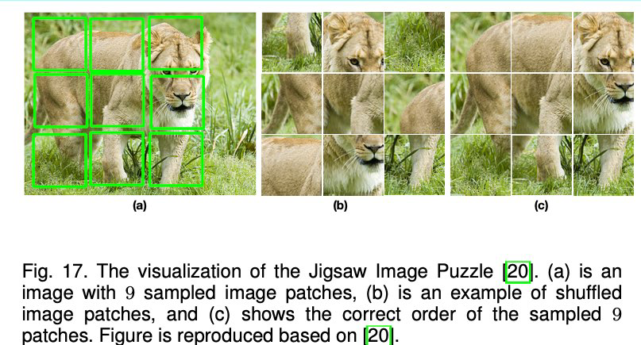

Learning with Spatial Context Structure¶
- Images contain rich spatial context information such as the relative positions among different patches from an image which can be used to design the pretext task for selfsupervised learning
- The pretext task can be to predict the relative positions of two patches from same image [41], or to recognize the order of the shuffled a sequence of patches from same image [20], [88], [89]
- The context of full images can also be used as a supervision signal to design pretext tasks such as to recognize the rotating angles of the whole images [36]
- ConvNets need to learn spatial context information such as the shape of the objects and the relative positions of different parts of an object.

- Doersch et al. is one of the pi- (b) oneer work of using spatial context cues for self- supervised visual feature learning [41]
- Random pairs of image patches are extracted from each image, then a ConvNet is trained to recognize the relative positions of the two image patches
- ConvNets need to recognize objects in images and learn the relationships among different parts of objects
- To avoid the network learns trivial solutions such as simply using edges in patches to accomplish the task, heavy data augmentation is applied during the training phase
- Following this idea, more methods are proposed to learn image features by solving more difficult spatial puzzles [20], [27], [87], [88], [89]
- Noroozi et al. attempted to solve an image Jigsaw puzzle with ConvNet [20]
- The shuffled image patches are fed to the network which trained to recognize the correct spatial locations of the input patches by learning spatial context
- Given 9 image patches from an image, there are 362, 880 (9!) possible permutations and a network is very unlikely to recognize all of them because of the ambiguity of the task
- To limit the number of permutations, usually, hamming distance is employed to choose only a subset of permutations among all the permutations that with relative large hamming distance.
- Only the selected permutations are used to train ConvNet to recognize the permutation of shuffled image patches [20], [35], [88], [89]